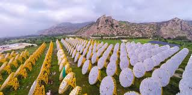

Introduction to Solar Thermal Power Plants
Solar thermal power plants play a significant role in India's efforts to harness renewable energy for a sustainable future. Using concentrated solar power (CSP) technology, these plants convert sunlight into heat, which is then used to generate electricity. This article explores the status, advantages, challenges, and future prospects of solar thermal power in India.
Solar thermal power plants use mirrors or lenses to concentrate sunlight onto a receiver, heating a fluid that produces steam to drive a turbine. Unlike photovoltaic systems, solar thermal plants can incorporate thermal storage, allowing electricity generation even when the sun is not shining. This makes them a valuable addition to India’s energy mix.
Current Status of Solar Thermal Power in India
India has made progress in developing solar thermal projects, though their adoption is slower compared to photovoltaic systems. Key milestones include:
- Operational Projects: India’s first solar thermal power plant, the 50 MW Godawari Green Energy project in Rajasthan, was commissioned in 2013.
- Installed Capacity: As of 2024, India’s installed solar thermal power capacity is approximately 300 MW.
- Planned Projects: The government is exploring hybrid plants that combine solar thermal and photovoltaic systems to improve efficiency.

Growth of Solar Thermal Power in India
| Year |
Installed Capacity (MW) |
| 2010 |
0 |
| 2015 |
100 |
| 2020 |
200 |
| 2024 |
300 |
Advantages of Solar Energy
- Energy Storage: Thermal storage systems enable power generation even during cloudy weather or at night.
- Scalability: Solar thermal plants can be designed for utility-scale applications.
- Reduced Carbon Footprint: These plants produce zero emissions during operation.
- Integration with Other Sources: They can be paired with fossil fuels or biomass to ensure continuous power supply.
Challenges in Solar Thermal Power
Despite their potential, solar thermal power plants face several challenges:
- High Costs: Installation and maintenance are costlier than photovoltaic systems.
- Water Usage: These plants require significant amounts of water for cooling and cleaning mirrors.
- Land Requirements: Solar thermal plants need large tracts of land with high direct sunlight.
- Technical Complexity: Operations involve advanced technologies and precise maintenance.
Government Policies and Initiatives
The Indian government has introduced several initiatives to support solar thermal power:
- National Solar Mission: Focuses on developing CSP technologies alongside PV systems.
- Renewable Energy Policies: State-level policies encourage investment in solar thermal plants.
- Research and Development: Funding and collaborations to improve efficiency and reduce costs.
- Incentives: Subsidies, tax benefits, and performance-based incentives for developers.
Future Prospects
The future of solar thermal power in India depends on overcoming technical and financial challenges. Promising advancements include:
| Year |
Projected Capacity (MW) |
| 2025 |
500 |
| 2030 |
1500 |
| 2040 |
3000 |